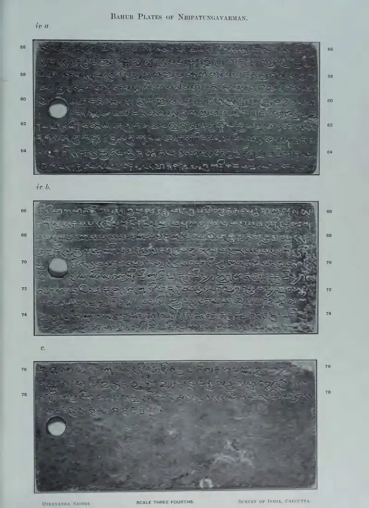
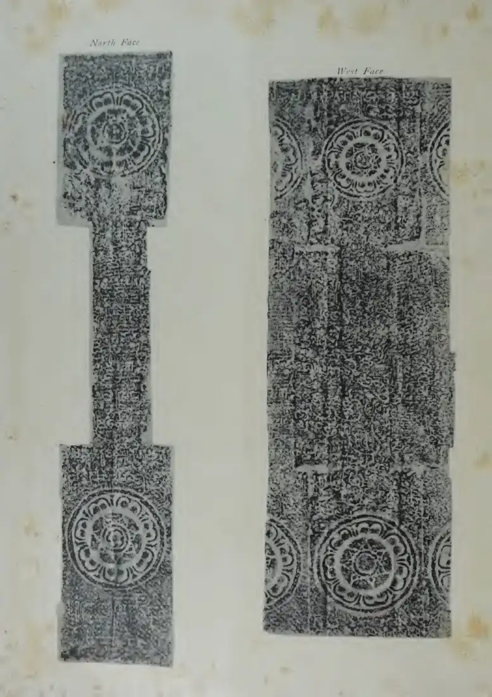

No. 38.—POLONNARUVA INSCRIPTION OF VIJAYABAHU I.
BY S. PARANAVITANA, OOTACAMUND.
The subjoined inscription is engraved on a stone slab lying to the west of Vihāra No. 1, about 50 feet north-east of the Latāmanđāpaya in Polonnaruva, the mediaeval capital of the kings of Ceylon. It was first discovered and brought to notice by Mr. H. C. P. Bell, C.C.S., the late Archæological Commissioner of Ceylon, who sent inked estampages of it, for examination, to the Government Epigraphist for India. Mr. H. Krishna Sastri in his Annual Report on Epigraphy for the year 1913, has discussed the historical importance of this record. An account of the inscription, with a translation of it, has also been published by Mr. H. C. P. Bell in the Annual Report of the Archæological Survey of Ceylon for the year 1911-12. The text of the inscription has recently been published in the South-Indian Inscriptions (Texts), Vol. IV (No. 1396). The present article is prepared with the help of an impression preserved in the office of the Government Epigraphist for India, and of another kindly supplied by the Archæological Commissioner of Ceylon. I am much indebted to Rao Bahadur H. Krishna Sastri and
1 Expressed by a symbol.
2 Correct bhavantiu or Bhavam tri. The metre seems to be upajāti although the first akshara of the second line does not conform to the scanning. [What is meant here is probably Bhavam Tri(Tri)-nētram.—Ed.]
3 Possibly this is to be corrected 'lōkyām' or 'lōchyam'.
4 This expression is repeated at the end of the third verse, in line 3. The correct reading is possibly 'Bhagavatī tu Sūryah' or 'Bhagavāms=tu Sūryah'.
5 The metre is probably upajāti, but the fifth akshara is short instead of long. [The original reads Śatv-āstu.—Ed.]
6 Apparently martyulōkē is intended. 7 [The original has varnna.—Ed.]
8 va ia written below the line. 9 Correct Pratimā.
10 Correct bhaktānām (?). [The original reads bhaktyārnāh.—Ed.]

Mr. K. V. Subrahmanya Aiyar for many suggestions, and for the kind encouragement given to me in preparing this paper.
The slab on which the inscription is engraved measures 8' 2" by 2' 6". There are 49 lines of writing on it. The stone had been planed and ruled before the letters were engraved. The writing, which has been well executed, is in a fairly good state of preservation—the average size of the letters being about 1 inch in height. The characters used in the record are Grantha and Tamiļ. They agree, on the whole, with those of the Tamiļ inscriptions of the contemporary Chōļa kings on the mainland of South India. The following facts, however, are noteworthy. The pullī or virāma sign, which is generally not used in most of the Tamiļ inscriptions in the South India of the mediaeval age, is here invariably indicated by a small vertical stroke, written over the letter, e.g. in vaļi vanda (l. 7). The anusvāra is generally written over the letter, at its top. The first five lines consist of a Sanskrit verse in the Šārdūlavikrīđita metre, and the rest of the inscription is in Tamiļ prose, where, however, there is a great admixture of Sanskrit words. In the Sanskrit portion the rules of sandhi have not been observed in one place, i.e. *kārshīt+śrī (l. 2). It is interesting to note that, in the Tamiļ passage, the following old Sinhalese words are used with Tamiļ inflexions in some cases:—
L. 16. Senevirat (Skt. Sēnāpati-rāja), Commander-in-Chief.
L. 17. Pulanari (Skt. Pulasti-nagara), the name of a city.
L. 20. daļadā (Skt. damšhtrā-dhātu), Tooth Relic.
L. 27. Mugalan (Skt. Maudgalyāyana), the name of a Buddhist monk.
No date is given in the inscription ; but it mentions king Vijayabāhu I, and states that he reigned for 55 years and celebrated his 73rd birthday festival. According to the Mahāvamśa, the duration of his reign was only 55 years. Therefore, it is evident that this record was inscribed after his death. According to the chronology adopted by Wijesinha, the translator of the Mahāvamśa, Vijayabāhu reigned from A.D. 1065 to 1120.1
The inscription opens with an eulogistic account of king śrī—Saṅghabōdhivarman alias Vijayabāhudēva. It says that he belonged to the Solar race and that he had to conquer many enemies before he entered Anurādhapura, where he was crowned king of Ceylon, at the instance of the Saṅgha (i.e. the Buddhist monks), for the protection of the religion of the Buddha. It is also stated that he invited monks from Arumana,2 and purified the saṅgha of the three nikāyas (fraternities),3 to whom he gave three tulābhāras (i.e. weight of gold equal to that of his own person). Having brought the whole of the island of Ceylon under his dominion, he reigned for
His birth, in A.D. 1040.
He freed Rōhaṇa of enemies and assumed the title of Vijayabāhu, when he was seventeen years old, in A.D. 1058.
In the 15th year of his Rōhaṇa rule, i.e. the 33rd year of his age, he entered Anurādhapura and became the ruler of all Ceylon, in A.D. 1075. His death, after the 73rd birthday which was the 56th year of his Rōhaṇa rule or the 41st year of his Polonnaruwa rule, in A.D. 1114.
Epigraphia Zeylanica, Vol. II, p. 207.
1 According to the latest version of this part of the chronology of Ceylon, the dates, connected with the principal events of Vijayabāhu's career, are as follows:—
2 Arumana (Sinhalese Aramaṇa) is a corruption of the Pāļi word Rāmañña, which was the name by which Lower Burma was known in ancient times. Rev. Foulkes tries to locate the Aramaṇa country on the Coromandel Coast, somewhere between the Chōļa and the Kalinga countries, in the dominions of the old Pallavas (Indian Antiquary, Vol. XVII, p. 126).
3 The three nikāyas or fraternities, into which the Buddhist Church in Ceylon was divided, were the Mahāvihāra, Abhayagiri, and Jētavana sects.
55 years, and passed his 73rd birthday (tirunakshatram).1 It next mentions the building of a shrine for the Tooth Relic of Buddha in the monastery of Uturoļmuļa which was a part of the Abhayagiri-vihāra by a General named Dēva, at the command of the king. We are next introduced to the royal preceptor Vyāriņi Mugalan, who is described to have been well versed in all the sciences and scriptures, and who was a high dignitary of the Buddhist Church in Ceylon at this period. This hierarch, as our inscription informs us, convened a meeting of the chief ministers of the state, and inviting the Vēļaikkāra forces to their presence, exhorted them to protect the temple of the Tooth. The Vēļaikkāras, who consisted of the three divisions of the Mahā-tantra, the Vaļaņjiyar, and the Nagarattār, agreed to do so, and re-named the temple as Mūņru-kai-tiru-Vēļaikkāraņ-Daļadāy-perum-paļļi, and concerted the necessary arrangements for the protection of the shrine. They bound themselves not only to protect the temple, its lands, its serfs, property, etc., but also to keep it in proper repair and to do everything necessary for its proper maintenance. The inscription also gives a list of the various tribes which formed the Vēļaikkāras and ends with an imprecation on those who act against the rules laid down therein.
The account given in this inscription of king śrī-Saṅghabōdhi Vijayabāhu agrees in every detail with that given in the Mahāvamśa of Vijayabāhu I. So there is no doubt about the identity of the king mentioned in our record. The statement that he had to conquer many enemies before he could establish his authority, is, no doubt, a reference to the long wars that he had to wage against the Chōļa invaders and the petty chieftains of Ceylon who ruled in the southern part of the island. Perhaps it might not be out of place, in this connection, to give a brief account of the state of the country before the accession of Vijayabāhu to the throne, and a short sketch of his career, as stated in the Mahāvamśa (Chapters LVIII to LX). At the beginning of the eleventh century, in the reign of Rājarāja I, the Chōļas invaded Ceylon and annexed the northern part of the island to their dominions, taking Mahinda V, the then king of Ceylon, as a prisoner, to the Chōļa country. From this time, up to the end of the reign of the Chōļa king Adhirājēndra-dēva, Ceylon acknowledged the supremacy of the Chōļas.2 During this period Ceylon was in a state of utter confusion. The Sinhalese princes, driven to the mountainous districts of the South, were always fighting amongst themselves, when the Chōļas were not at their doors. When the country was in this distracted state, a young scion of the ancient Sinhalese royal family, named Kirti, raised the standard of war, and after a considerable amount of fighting, made himself the master of the Rōhaņa country, the southern part of Ceylon, and assumed the title of Vijayabāhu, when he was only seventeen years of age. After making his position secure in the principality of which he was the chief, he started on a campaign to rid the island of foreign domination. The time chosen by him for this enterprise was an opportune one. The campaign of Vijayabāhu against the Chōļas falls into the period immediately before the accession of Kulōttuṅga I to the
1 Tirunakshatram means the 'sacred asterism.' It seems as if the Sinhalese kings of old celebrated a special festival annually, on the day of the constellation under which they were born. I am informed by Mr. K. V. Subhrahmanya Aiyar, Superintendent for Epigraphy, that such a custom still prevails in the royal family of Travancore, and that the princes of Travancore are named after the constellations under which they are born. The Mahāvamśa also gives instances in which persons were named after the constellation of their birth, e.g. Tishya and Pushya. [The janma-nāma or birth name of a Hindu child is given after the janma-nakshatra or the constellation of nativity.—Ed.]
2 Inscriptions of Rājarāja I are found in Ceylon, and in one of the records of the Tanjore temple it is stated that the income of several villages in Ceylon was dedicated to that shrine. Rājēndra-Chōļa I also says in his inscriptions that he conquered the whole island. Rājādhirāja I and Rājēndradēva, the successors of Rājēndra-Chōļa I, both conducted campaigns in Ceylon, in which several princes of the island are said to have perished. An inscription of Adhirājēndra is also found at Polonnaruva. No inscription, however, of any Chōļa successor of Adhirājēndra is found on the island of Ceylon.
Chōla throne. This was a period of Civil War in the Chōla country, and, consequently, the Chōlas were not able to send sufficient forces to Ceylon to quell the rising there against their authority. In one of the inscriptions of Kulōttuñga at Tirukkaļukkuņram,1 he says that he sent several expeditions to Ceylon, but does not mention any definite results gained by them. These were most probably, the armies which, according to the Mahāvamśa, were sent by the Chōla king to fight against Vijayabāhu. After a long and protracted campaign, Vijayabāhu succeeded in driving the Chōlas out of Ceylon, and made himself the master of the whole island.
During the Chōla occupation, the Buddhist religion had suffered greatly. In fact, when Vijayabāhu came to the throne, he found that there were no ordained monks in the island, who would help him in the work of reviving the religion of the land. Therefore, he sent an embassy to the king of Aramaṇa, requesting him to send properly ordained monks to Ceylon. The king of Aramaṇa at this time was Anuruddha, from whom Vijayabāhu received substantial support in his struggle against the Chōlas. The Burmese king sent several properly ordained monks to the island, and they revived the Buddhist Church in Ceylon, and helped Vijayabāhu to restore Buddhism to its pristine glory and splendour. Our inscription alludes to this event, and, moreover, states that he purified the saṅgha of the three nikāyas (fraternities), and gave three tulābhāras to them. The Ceylon chronicles do not mention this fact, though they give a long account of the king's benefactions to the religious establishments, and his various works of public utility.
The Commander-in-Chief Dēva, who, at the instance of the king, built a shrine for the Tooth Relic, is not known to us from other sources. The monastery of Uturoļmuļa, within the precincts of which the Temple of the Tooth Relic was built, and which was itself a part of the Abhayagiri-vihāra2 at Polonnaruva, must be the same as the monastery of Uttarōla which was built by Māṇa, one of the predecessors of Vijayabāhu I, for his elder brother who had entered the priesthood.3 It is also stated in the Mahāvamśa that the king entrusted the guard of the Tooth Relic to him. The Buddhist monk Mugalan, who took an active part in getting the consent of the Vēlaikkāras to protect the temple, is not mentioned, so far as I know, in any of the Ceylon chronicles.
The next point to be discussed is, who these Vēlaikkāras were, and what their position was in Ceylon, at the time when this inscription was set up. The Vēlaikkāras are mentioned in the Mahāvamśa as having formed a part of the army of the Sinhalese kings of this period. It is stated that towards the latter part of Vijayabāhu's reign, there was a revolt of these troops. when he was making preparations for undertaking an expedition to South India against the Chōla king. This rising of the Vēlaikkāras was put down with considerable difficulty, and as a consequence of it, the projected campaign against the Chōlas had to be given up.4 Later on, in the reign of Vijayabāhu's grandson, Gajabāhu II, they again figure in the history of Ceylon. There5, it is said, that Gajabāhu's rival, Parākramabāhu I, tried to win them over to his side. A few years later, we find the Vēlaikkāras in alliance with the Kēraļas and the people of Rōhaṇa, rising in rebellion against the authority of Parākramabāhu I.6 These accounts, coupled with the fact that their aid was considered effective for the protection of one of the most cherished national treasures of the Sinhalese people, go to prove that the Vēlaikkāras were, at this period, a very powerful community.
1 Indian Antiquary, Vol. XXI, p. 282.
3 This vihāra was distinct from the monastery of the same name at the old capital, Anurādhapura.
3 Mahāvamśa, Chapter LVII.
4 Ibid., Chapter LX.
5 Ibid., Chapter LXIII.
6 Ibid., Chapter LXXIV.
The inscriptions of the Chōla kings Rājarāja I and Rājēndra-Chōla I, on the walls of the Brihadiśvara temple at Tanjore, make mention of several Vēlaikkāra regiments. The origin of the word vēlaikkāra has not yet been conclusively proved. Different scholars have given different interpretations of the word. Dr. Hultzsch has rendered vēlaikkāra-pađaigal as 'the troop of servants'.1 The late Rai Bahadur Venkayya was of opinion that it was a corruption of the word vēlaikkāra, and comments as follows:—"At any rate, the origin of the term is obscure, and must be left to future research. It is possible they were no mercenaries in the Chōla country at the beginning of the 11th century. If a conjecture may be offered, I would say they were perhaps volunteers who enlisted themselves when the occasion (vēlai) for their services arose. In later times when their services were not required in the Tamil Country, they probably migrated to Ceylon, during the period of interregnum, when there were frequent Chōla invasions against the island. Eventually they probably developed into mercenaries."2 Mr. Krishna Sastri, in his remarks upon this inscription, says of the Vēlaikkāras, "Whatever the Vēlaikkāras may have been in their religious creed, it is clear from what is stated in the inscription that they included all working classes, and were apparently of Indian origin who immigrated into Ceylon with the merchants whom they served."3 The late Mr. Gopinatha Rao's opinion as to who the Vēlaikkāras were was quite different from any of the views set forth above. He says that they were not mercenaries, but "persons who had pledged themselves to do certain duties, failing which, they would voluntarily undergo certain penalties, which, in most cases, was death." He has quoted two passages from Tamil literature, one from the commentary of Periyavāchchapillai on Nammālav's Tirumoļi which explains the word pū-vēlaikkāra as "those who, when they see the king being without flower(-garlands) at the time when he ought to wear them, had vowed to stab themselves and die." The other extract is from the commentary of the Śivavachanabhūshanam, where the Vēlaikkāras are said to be "the servants of the king who chastise those who prove traitorous to him."4
In this inscription they are termed 'the Vēlaikkāras of the three hands' (mūṇru-kai). In No. 602 of 1912, another inscription from Ceylon, mūṇru-kai-tiru-vēlaikkāraṇ appears as the surname of a certain Adhikaraṇa Sāraṇaṇ, and in No. 610 of the same year, also from Ceylon, mūṇru-kai is referred to as the name by which a particular community was known.5 In an inscription of the time of Kulōttunga-Chōladēva, in the Bhaktavatsalēsvara temple at Shērmādēvī, mūṇru-kai-mahāsēṇai are represented as protecting certain charitable endowments made to that temple.6 A Tamil inscription at Dangūr, in Mysore, too, refers to the Vēlaikkāras of the right hand.' It seems from our inscription as if the three divisions or 'hands' to which the Vēlaikkāras were divided, consisted of the Mahātantra, the Valañjiyar, and the Nagarattār. Out of these terms, Mahātantra is not found elsewhere, and its sense is not clear. Probably it was used here with a Buddhist significance. The terms Valañjiyar and Nagarattār are of frequent use in the South Indian inscriptions of this period. They are there represented to have been a wealthy and influential body of merchants. In Mr. Rice's Mysore Inscriptions there are three records from Ralligami, which refer to the corporation of merchants known as the Valañjiyar. In one of them the members are styled "protectors of the vīra-baṇañja rights."8 In the second they are called
1 South-Indian Inscriptions, Vol. II, p. 97.
2 Ibid., Vol. II, Introduction, p. 10.
3 Epigraphical Report of Madras for 1913, p. 102.
4 The above is from an article by the late Mr. Gopinatha Rao, a reprint of which was found among some of his papers which are in the library of the Government Epigraphist for India. I have not been able to find out the journal to which the article was contributed.
5 Ep. Rep. for 1913, p. 101.
6 No. 189 of the Madras Epigraphical Report for 1895.
7 Mysore Archeological Report for 1920, p. 31.
8 Mysore Inscriptions, p. 73.
baṇajigas,1 whilst the third inscription calls the members of the guild “ the protectors of the vīra-baṇañja-dharma.”2 Two inscriptions from Shikarpūr Taluq (Nos. 94 and 118), published in the Epigraphia Carnatica, Vol. VII,3 describe these merchants in great detail. An inscription has been found at Ānaulundāva, a village near Polonnaruva, which begins with almost the same phrases as are used in describing the Vaļañjiyar merchants in the Kanarese inscriptions from Mysore. This inscription being only a fragment, the word vaļañjiyar does not actually occur in it; but the phraseology used in it shows, beyond doubt, that it must have been a record of the same Corporation of Merchants.4 In the inscription No. 555 of the Madras Epigraphical collection for 1923, mention is made of the Vaļañjiyar of South Ceylon (Ten-Ilañgai-vaļañjiyar). They are there represented as making donations to a Vishṇu temple.5 As regards the derivation of this word, the late Mr. Venkayya says:—“ In Kanarese baṇajiga is still used to denote a class of merchants. In Telugu the word balija or balijiga has the same meaning. It is therefore probable that the words vaļañjiyam, valañjiyar, baļañji, baṇañji, baṇajiga and balija are cognate, and derived from the Sanskrit vaṇij.”6 The Nagarattārs, who are mentioned in this inscription along with the Vaļañjiyars, were also an influential community of merchants, who, at the time that we are speaking of, had their mercantile establishments not only all over South India and Ceylon, but also in Burma and other parts of Further India.7 The Nagarattārs comprised within their ranks another class of merchants called the Nānādēśi. An inscription of Queen Lilāvatī of Ceylon, who reigned in the first decade of the 13th century, mentions the Nānādēśi merchants as having made some donations to an alms-house at Anurādhapura.8 As the Vaļañjiyars are said to have been the leaders (mūdādai) of the Vēļaikkāra troops, it might be conjectured that the latter migrated to Ceylon with the Vaļañjiyar whom they served. The Vaļañjiyars and the Nagarattārs are at present represented by the Baṇajiga and Nagaratta communities of the Kanarese country.9
The different sub-sects, into which the Vēļaikkāras were further divided, were the Valañgai, Iđañgai, Śīrudanam, Pilļaigaldanam, Vađugar, Malaiyālar, Parivārakkondam, and others. Out of these Valañgai and Iđañgaimean the ‘Right hand’ and the ‘Left hand’ castes respectively. From an early time the inhabitants of South India were thus divided. The Madras Epigraphical Report for 1913 contains the following interesting account as regards the origin of the Iđañgai:—“ While in order to kill demons (that disturbed) the sacrifices of the sage Kāśyapa, we were made to appear from the agni-kuṇđa (i.e. the sacrificial fire pit), and while we were protecting the said sacrifice, Chakravartin Arindama honoured the officiating sage priests by carrying them in a car, and led them to a Brāhmaṇa Colony (newly founded by himself). On this occasion we were made to take our seats on the backside of the car and to carry the slippers and umbrellas of these sages. Eventually, with these Brāhmaṇa sages, we also were made to settle down in the villages of Tiruveļlarai, etc. We received the clan name Iđañgai, because the sages (while they got down their cars) were supported by us on their left side.” In the same inscription it is said that there were ninety-eight sub-sects of the Iđañgai. Their insignia are given thus:—“ It is also understood that only those, who, during their congregational meetings to settle communal disputes, display the insignia(?) of horn, bugle and parasol, shall belong to our class. Those who have
1 Mysore Inscriptions, p. 120.
2 Ibid., p. 123.
3 P. 114 and p. 156.
4 This inscription runs as follows:—
(1) Samasta-bhuvanāgra-pañca-šata-vīra-śūsanam=āli(ñgita Lakṣmi)-
(2) (yā) lakṣaṇa (vakṣa-) sthala bhuvana-parākrama Śri-Vāsudēva Kunđalā mūla-(pūrtti-bha).
Epigraphia Zeylanica, Vol. II, p. 236
5 A. R. on Epigraphy for 1923, p. 106. 6 Ep. Ind., Vol. IV, p. 296. 7 A. R. on Epigraphy for 1913, p. 402.
8 Epitārazhia Zeylanica, Vol. I, p. 179.
9 A. R. on Epigraphy for 1913, p. 102.
to recognise us now and hereafter, in public, must do so from our distinguishing symbols, the feather of the crane and the loose hanging hair.”1
The term Širudanam appears in the Tanjore inscriptions of Rājarāja I and Rājēndra-Chōļa I, as a title given to military officers. Among the regiments mentioned in the inscriptions of the same place we find two named “Širudanattu-vađuga-kkāvalar and Širudanattu-Valaṅgai-Vēļaikkāra-ppađaiga!.” The true significance of this term has not yet been satisfactorily explained. Dr. Hultzsch explains the terms širudanam and perudanam as the ‘small treasury’ and the ‘big treasury’, and persons so entitled as officers of the treasury, small or big. The titles are sometimes explained as referring to the followers of the king during his minority and majority. In all probability širudanam and perudanam were purely honorary titles conferred on officers, as well as private individuals, according to the status held by them in official position or in society.2
The Vađugar (Northerners) might have been immigrants from the Telugu Country. The Malaiyālar, most probably, were settlers from the Malabar Coast. On the occasion of the rebellion of the people of Rōhaṇa against Parākramabāhu I, as already mentioned, the Kēraļas took the side of the insurgents. There are also other references to the Kēraļa soldiers in the Mahāvamśa. The term Malaiyālar, therefore, must have been applied to the people from the Kēraļa country.
The inscription is silent as to the reason why the protection of the Vēļaikkāras was sought for the Tooth Relic. If this inscription was engraved only after the death of Vijayabāhu I, it must have been owing to the state of anarchy which prevailed after that event.
Out of the places mentioned in this record, Anurādhapura is the well-known capital of the ancient Sinhalese kings. Arumana has already been identified with Rāmañnadēsa, i.e. Lower Burma. Pulanari, also called Vijayarājapura in the inscription, evidently after King Vijayabāhu I, is the same as Poionnaruwa (Pulastipura)3, and was the mediaeval Sinhalese Capital. In Chōļa inscriptions found in Ceylon this city is also called Jananāthamaṅgalam. There are extensive ruins of the many monasteries, palaces and other public buildings with which it was adorned in the days of its splendour.
TEXT.
- 1 Švasti Šriļ [||*] Larnkāyārn Jina-danta-dhātu-bhavanam yad=Dēva-
- 2 sēnādhipō=kārshīt śrī-Vijayādibāhunṛivar-ādēś[ā]-
- 3 t Pulastēh purē [|*] Vēļaikkāra-samā[hritā]n tad=api ta-
- 4 t-paryyanta-dēvālayān Vēļaikkāra-balāni pā-
- 5 ntu4 nitarām=ā-kalpa-sandhēr=bhuvi [||*] Namō Buddhāya [||*]
- 6 Šrī-Larnkā-dvīpattu Sūrya-varnśattu Ikshvāku[vi]-
- 7 n vaļi-vanda anēka-šatru-vijayam paṇṇi Anur[ā]-
- 8 dhapuram pukku Buddha-śāsanam rakshikka vēṇđi sa-
- 9 ṅgha-niyōgattāl tiru-muđī-śūđi Arumanattilni-
- 10 ṇrum saṅgattārai aļaippittu mūṇru nikāya-
- 11 ttu saṅgha-śuddhi paṇṇuvittu mūṇru tulābhāram
- 12 mūṇru nikāyattukku kuđuttu daśa-rāja-dharmattāl
- 13 aiñbatt-ayy-āṇđu Ilaṅgai-muļudum oru-kuđai-ni[la]-
- 14 ṛri=ttiruv-irājyañ-cheyd-aruļi eļupattu mūv-āṇđu tiru-na-
- 15 kshatrañ=cheluttina Kō-śrī-Saṅghabōdhi-vatmar-āṇa chakravarttī-
- 16 ga] śrī-Vijayabāhudēvar=anuvāgal Dē[va]-sēnevirattar-
1 A. R. on Epigraphy for 1913 p 109.
2 Ibid for 1913, p. 97.
3 This is a name in which at least we see the Puranic allusion to Pulasti Brahmā, an ancestor of Rāvaṇa, the giant king of Ceylon.
4 S. I. I. Texts Vol. IV, No. 1396 reads yūntu.
Government of India Publications are obtainable from the Government of India Central Publication Branch, 3, Government Place, West, Calcutta, and from the following Agents :—
EUROPE.—OFFICE OF THE HIGH COMMISSIONER FOR INDIA,
INDIA HOUSE, ALDWYOH, LONDON, W.C. 2.
And at all Booksellers.
INDIA AND CEYLON.—Provincial Book Depôts :
MADRAS :—Superintendent, Government Press, Mount Road, Madras.
BOMBAY :—Manager, Government Book Depôt, Charni Road Gardens, Queen's Road, Bombay.
SIND :—Library attached to the Office of the Commissioner in Sind, Karachi.
BENGAL :—Bengal Secretariat Book Depôt, Writers' Buildings, Room No. 1, Ground Floor, Calcutta.
UNITED PROVINCES OF AGRA AND OUDH :—Superintendent of Government Press, United Provinces of Agra and Oudh, Allahabad.
PUNJAB :—Superintendent, Government Printing, Punjab, Lahore.
BURMA :—Superintendent, Government Printing, Burma, Rangoon.
CENTRAL PROVINCES AND BERAR :—Superintendent, Government Printing, Central Provinces, Nagpur.
ASSAM :—Superintendent, Assam Secretariat Press, Shillong.
BIHAR AND ORISSA :—Superintendent, Government Printing, Bihar and Orissa, P. O. Gulzarbagh, Patna.
COORG :—Office of the Chief Commissioner of Coorg, Bangalore.
NORTH-WEST FRONTIER PROVINCE :—Manager, Government Printing and Stationery, Peshawar.
Thacker, Spink & Co., Calcutta and Simla.
W. Newman & Co., Ltd., Calcutta.
S. K. Lahiri & Co., Calcutta.
The Indian School Supply Depôt, 309, Bow Bazar Street, Calcutta.
Butterworth & Co. (India), Ltd., Calcutta.
Rai M. C. Sarear & Sons, 15, College Street, Calcutta.
Standard Literature Company, Ltd., Calcutta.
Association Press, Calcutta.
Chukervertty, Chatterjee & Co., Ltd., 13, College Square, Calcutta.
The Book Company, Calcutta.
James Murray & Co., 12, Government Place, Calcutta.
(For Meteorological Publications only.)
Ray Chaudhury & Co., 68/5, Asutosh Mukherji Road, Calcutta.
Scientific Publishing Co., 9, Taltolla Lane, Calcutta.
Chatterjee & Co., 204, Cornwallis Street, Calcutta.
Standard Law Book Society, 8-2, Hastings Street, Calcutta.
The Hindu Library, 3, Nandalal Mullick Lane, Calcutta.
Kamala Book Depot, Ltd., 15, College Square, Calcutta.
B. C. Basak, Esq., Proprietor, Albert Library, Dacca.
Mitra Brothers, Rajshahi.
Higginbothams, Madras.
Rochouse & Sons, Madras.
G. A. Nateson & Co., Publishers, George Town, Madras.
The sophical Publishing House, Adyar, Madras.
P. Varadachary & Co., Madras.
S. Murthy & Co., Madras.
City Book Co., Madras.
Bright & Co., Trivandrum.
The Booklover's Resort, Taikad, Trivandrum, South India.
E. M. Gopalakrishna Kone, Pudumandapam, Madura.
Central Book Depôt, Madura.
Vijapur & Co., Vizagapatam.
Thacker & Co., Ltd., Bombay.
D. B. Taraporevala, Sons & Co., Bombay.
Sunder Pandurang, Bombay.
Ram Chandra Govind & Sons, Kalbadevi Road, Bombay.
N. M. Tripathi & Co., Booksellers, Princess Street, Kalbadevi Road, Bombay.
New & Secondhand Bookshop, Kalbadevi Road, Bcmbay.
Mrs. Radhabai Atmaram Sagoon, Kalbadevi Road, Bombay.
J. M. Pandia & Co., Bombay.
Gatulal & Co., Bombay.
A. H. Wheeler & Co., Allahabad, Calcutta and Bombay.
S. Govind & Co., Sandhurst Road, Girgaon, Bombay.
Bombay Book Depôt, Girgaon, Bombay.
Proprietor, New Kitabkhana, Poona.
The Manager, Oriental Book Supplying Agency, 15, Shukrawar, Poona City.
Rama Krishna Bros., opposite Vishrambag, Poona City.
S. P. Bookstall, 21, Budhwar, Poona.
Mangaldas & Sons, Booksellers and Publishers, Bhaga Talao, Surat.
The Standard Book and Stationery Co., 32-33, Arbab Road, Peshawar.
R. B. Umadikar & Co., The Bharat Book Depôt, Dharwar.
The Students' Own Boox Depôt, Dharwar.
Shri Shankar Karnataka Pustaka Bhandasa, Malamuddi, Dharwar.
The Standard Bookstall, Karachi, Quetta, Delhi, Murree and Rawalpindi.
The Karachi Book Depôt, Elphinstone Street, Camp, Karachi.
The English Bookstall, Karachi.
The Standard Bookstall, Quetta.
U. P. Malhotra & Co., Quetta.
J. Ray & Sons, 43 K. & L., Edwardes Road, Rawalpindi, Murree and Lahore.
The Standard Book Depôt, Lahore, Nainital, Mussorie, Dalhousie, Ambala Cantonment and Delhi.
N. B. Mathur, Supdt., Nazir Kanun Hind Press, Allahabad.
The North India Christian Tract and Book Society, 18, Clive Road, Allahabad.
Ram Dayal Agarwal, 184, Katra, Allahabad.
Ram Narain Lal, Katra, Allahabad.
The Indian Army Book Depôt, Juhi, Cawnpore.
Narayan & Co., Mestoa Road, Cawnpore.
The Indian Army Book Depôt, Jullundur City, Daryaganj, Delhi.
Manager, Newal Kishore Press, Lueknow.
The Upper India Publishing House, Ltd., Literature Palace, Ammuddanla Park, Lucknow.
Rai Sahib M. Gulab Singh & Sons, Mufid-i-Am Press, Lahore and Allahabad.
Rama Krishna & Sons, Booksellers, Anarkali, Lahore.
Puri Brothers, Booksellers and Publishers, Katcheri Road, Lahore.
The Tilak School Bookshop, Lahore.
The Standard Bookstall, Lahore.
The Proprietor, Punjab Sanskrit Book Depôt, Saidmitha Street, Lahore.
The Insurance Publicity Co., Ltd., Lahore.
The Punjab Religious Book Society, Lahore.
The Commercial Book Coy., Lahore.
The University Book Agency, Karachi Road, Lahore.
Manager of the Imperial Book Depôt, 63, Chandney Chawk Street, Delhi.
Fono Book Agency, New Delhi.
Oxford Book and Stationery Company, Delhi and Calcutta.
Supdt., American Baptist Mission Press, Rangoon.
The Modern Publishing House, Ltd., 30, Phayre Street, Rangoon.
Burma Book Club, Ltd., Rangoon.
Manager, the "Hitavada," Nagpur.
Bhisey Brothers, Booksellers and Stationers, Sitabaldi, Nagpur.
S. C. Talukdar, Proprietor, Students & Co., Cooch Behar.
The Manager, Ceylon Observer, Colombo.
The Manager, The Indian Book Shop, Benares City.
Nandkishore & Bros., Chowk, Benares City.
The Srivilliputtur Co-operative Trading Union, Ltd., Srivilliputtur (S. I. R.).
Raghunath Prasad & Sons, Patna City.
The Students' Emporium, Patna.
K. L. Mathur and Bros., Guzri, Patna City.
Dandekar Brothers, Indore City.
Pustakalaya Sahayak Sahakari, Ltd., Baroda.
M. C. Kothari, Raipura Road, Baroda.
The Hyderabad Book Depôt, Chaderghat, Hyderabad (Deccan).
Tbakur & Co., Amraoti.
S. Krishnaswami & Co., Teppakulam P. O., Trichinopoly Fort.
National College Teachers' Union Book Depôt, Trichinopoly.
Superintendent, Bangalore Press, Lake View, Mysore Road, Bangalore City.





17 kku niyögittu=Ppulanariy-āṇa Vijayarājapurattu eđup-
18 pitta Mülasthānam-āgiya Abhayagiri-mahā-vihārattu agr-ā-
19 yatanam-āṇa1 Uttorulmülaiyil müv-ulagukkuñ=chikāmañi-
20 y-āgiya Daladā-Pātra-dhātu-svāmidēvargaļukku nitya=vāsa-bhavana-
21 m-āṇa pratham-ābhishēgattukku mañgala-griham-āṇa āttānđu-
22 dörun=tiru-nayana-möksham pañni añjaṇa nīrükkum
23 kaññlaān=cheyyum mañgala-mahā-śilāmaya-Buddha-
24 dēvarkku gandhakutiy-āṇa Daladāy-pperum-balli uñga-
25 ļ rakshay-āga vēnđum=eñrü sakala-śāstr-āgama-śil-ā-
26 chāra-sampannar-āṇa Rāja-guru Uturulmulaiyil Vyāriñi Mu-
27 galan Mahāsthavirar rāj-āmatyaröđun=küđa eļundaruliy=i-
28 rundu eñgaļai alaittu aruli-chcheydamaiyil Mā-tantirat-
29 tön=küđi eñgaļukku mütädaigal-āy-ulļa Valañjeyaraiyum e-
30 ñgaļöđu küđivarum=Nagarattär-ulļittöraiyum=kütti Münřu-
31 kai-ttiru-Vēlaikkārą Daladāy-pperum-balliy-eñrü
32 tiru-nāmañ=chätti eñgaļ=ařam-āy eñgaļ käval-āy nirka-
33 vēnđum=eñrü ařañ-gävalukku pađai-ppađaiyäl2 ör[ö]-
34 śēvagaraiyum örö-vēli nilamum=iťtu=kkuđuttu i-p-
35 palli nökkina ürgaļum pariväramum panđäramum abha-
36 yam-pukkäraiyum patťuñ=ketťuñ-käkkak=kađavõm=āga-
37 vum alivupatť-iđañgal3 alivu śörndum eñgaļ anva-
38 yam=ulļadañaiyum=eññänřum=idukku vēnđuvañav-e-
39 llän=cheyvõm=āgavum pañniṇa inda vyavasthai chandr-ā-
40 dityavarai nirřad-āga=kkaiy-vinäv=ěrři=chchembiluñ=kalli-
41 lum vetťuvittu=kkuđuttõm Valañgai Iđañgai Ši-
42 rudanam Pilļaigaļdanam Vađugar Malaiyälar Parivärak=
43 kondam pala-kalañaiyum-ulļitta tiru-Velaikkāra-
44 rõm [||*] Ippađi tirambuvänüm tiramba=chcholluvänu-
45 m tiramba chchammadippänüm Mā-tantirattukku=ppilaitta
46 pađai-ppagaiyan pañcha-mahā-pätakañ-cheydänüm tēvar-
47 püdar-mä-tavattörkku=kkuđuttaṇa kollüm kođum-
48 päviyum Buddha-Dharmma-Sañgha-ratnañgaļukku=ppilaittä-
49 num pugun=naragam puguvän [||*] Ařa=mařavařka [*] Svasti Šrih [||*]
TRANSLATION.
(Ll. 1-5.) May the Vēlaikkāra forces well protect, till the juncture of another kalpa, on this earth, that shrine of the Tooth Relic of Jina (Buddha), which Dēva, the Commander-in-Chief, had built in the city of Pulasti in Lañkā (Ceylon), at the command of the glorious king Vijaya-bāhu, and the other shrines of the gods (situated) near that (shrine), which the Vēlaikkāras have brought together under their protection. Obeisance to the Buddha.
(Ll. 6-24.) The glorious king Sañghabödhivarman alīas Chakravartin Šrī-Vijayabāhu-dēva, who appeared in the lineage of Ikshvāku of the Solar race in the prosperous island of Lañkā; who, having conquered many enemies, entered the city of Anurādhapura, and wore the beautiful crown at the request of the sañgha for protecting the Order (i.e. the religion) of the Buđana; who, inviting monks from Arumana, caused the purification of the sañgha of the three
1 S. I. I. (Texts) Vol. IV. p. 492 reads agravadanam-āṇa.
2 Ibid. reads [u]đaippađaiyäi.
3 Ibid. reads alivupatťadañgaļ.
fraternities (nikāyas) and gave three tulābhāras1 to the three fraternities ; who, bringing the whole of Lañkā under the shade of one umbrella, had been pleased to reign for fifty-five years with the ten principles of regal duty2 and celebrated seventy-three birthday festivities (tiru-nakshatram), gave orders to Nuvaragal3 Dēvasenevirattar, and caused to be built within (the precincts of) Uttoruļmūļa, which was the principal shrine of the great monastery of Abhayagiri the Mūlas-thāna (i.e. important seat of monks) in the city of Pulanari alias Vijayarājapura, the great temple of the Tooth Relic (daļa-dāy-pperumpallī), the permanent abode of the venerated Tooth Relic and the Bowl Relic (daļadā-pātra-dhātu-svāmi-dēvargal), the crest jewel of the three worlds, an auspicious house for the first inauguration ceremony, a gandhakuti4 for the great stone image of Buddhadēva to whom annually is held the festival of opening the eyes and fixing collyrium thereon.
(Ll. 25-39.) As the Mahāsthavira Vyāriṇi5 Mugalan, the royal preceptor, well versed in all the sciences and scriptures, of good conduct and behaviour, who, being gloriously seated in the Uturulmuļa (monastery) along with the ministers of the king was pleased to call us to his presence and said “The great temple of the Tooth Relic should be under your protection,” we, of the Mahātantra, having called together the Vaļañjiyar, who are our leaders, and the Nagarattār and others, who always accompany us, gave it the sacred name of “Mūņru-kai-tiru-vēļaikkāraṇ Daladāy-pperumpallī” (i.e. the great temple of the Tooth Relic of the Vēļaikkāras of the three hands), and to make it remain as our charity and under our protection, assigned for the protection of this charity one servant and one vēli of land (for ķis maintenance), from each regiment ; and bound ourselves to protect the villages under the supervision of this temple (pallī), its servants and treasures, as well as the men seeking its shelter, even though (we may) suffer ruin or loss ; and to always provide for all the requirements of this (temple), so long as our community continues to exist, repairing such parts (of the temple) as get dilapidated.
(Ll. 39-44.) In order that the agreement thus given may last as long as the Moon and the Sun (endure), we, the exalted Vēļaikkāras, consisting of the Valaņgai, Iđaņgai, Širudanam, Pilļai-gaļdanam, Vađugar, Malaiyālar, Parivārakkondam and various other classes of workmen (pala-kalaṇai) attested it (i.e. the agreement) with our own hands, and caused it to be engraved on copper and stone.
(Ll. 44-49.) Whose acts against this, or acquiesces in doing wrong to this, shall enter the hell wherein fall those enemies of the (Vēļaikkāra) regiments, who have wronged the Mahātantra, those who have committed the five great sins,6 those heinous sinners who have robbed what have been given to gods, bhūtas, and the great ascetics, and those who have wronged the (three) gems, (to wit), the Buddha, the Dharma, and the Sañgha. Forget not charity ! Hail ! Prosperity !
1 Tulābhāra is weighing one's self against gold or other precious substances and giving away the same in charity.
2 The ten principles of regal duty as explained in Pali books are, charity (dāna), piety (sīla), liberality (parichchāga), rectitude (ajjavam), gentleness (majjava), religious austerity (tapam), freedom from wrath (akkōdhō), humanity (avihimsā), forbearance (khanti), and the state of having no enmity (avirōdhatā).
3 The correct reading Nuvaragal in place of anuvāgal is due to Codrington.
4 Gandhakuti (perfumed chamber) was the name given to the part of the vihāra occupied by the Buddha himself, when he was alive.
5 It is doubtful whether Vyāriṇi formed a part of the name of the monk. No such name is met with any-where as the name of a Buddhist monk. I am not able to give any other explanation of this word.
6 The five great sins according to the Buddhists are :—(1) the murdering of one's father, (2) the murdering of one's mother, (3) killing an arhat or saint, (4) shedding the blood of a Buddha, (5) causing schism in the Order. According to the Hindu Law-books they are :—(1) killing a Bršhmaṇa, (2) drinking intoxicating liquor, (3) theft, (4) committing adultery with the wife of a religious teacher, and (5) associating with any one guilty of these crimes.